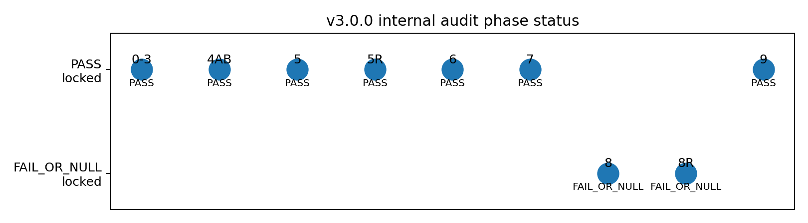
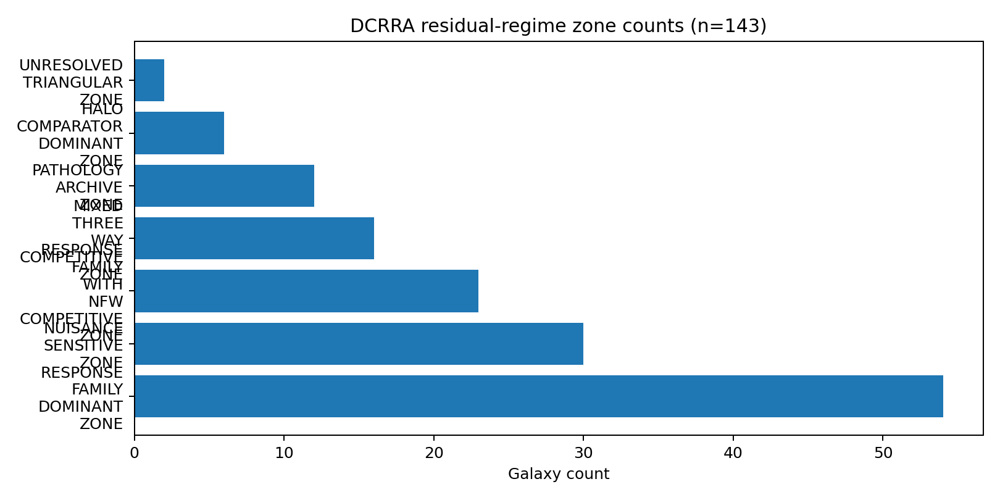
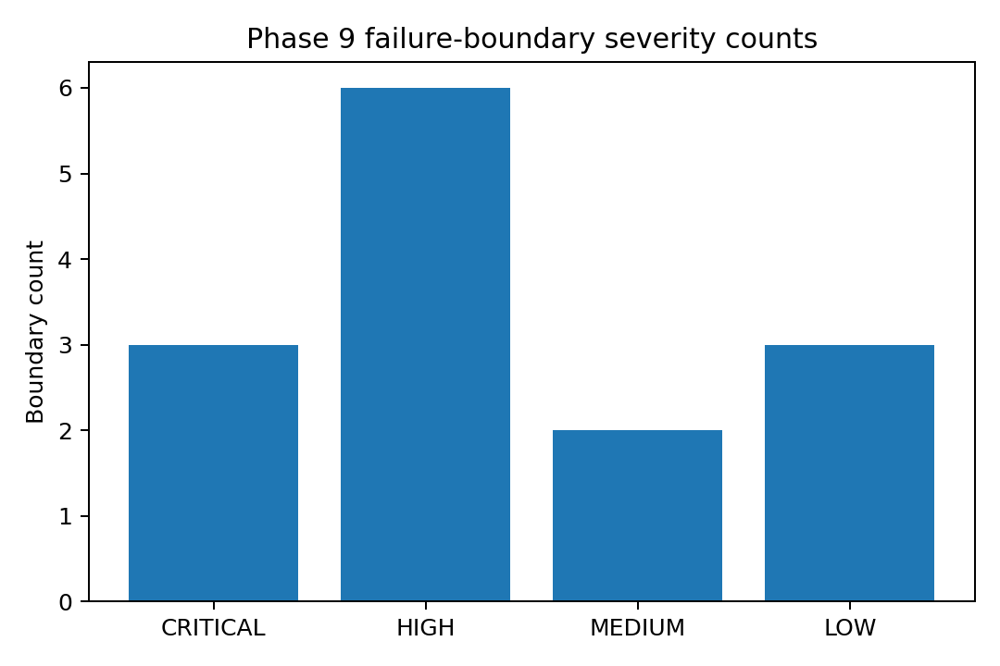

Claim-bounded integrated diagnostic framework for SPARC galaxy rotation-curve residual regimes.
Phases 0-7 passed within the internal SPARC diagnostic protocol, with boundary cautions.
Phases 8 and 8R are locked as FAIL_OR_NULL, preserving synthetic separability limitations.
Phase 9 locks 14 failure-boundary rows including 3 critical boundaries.



See README.md, CLAIM_BOUNDARY.md, and paper/ for details.